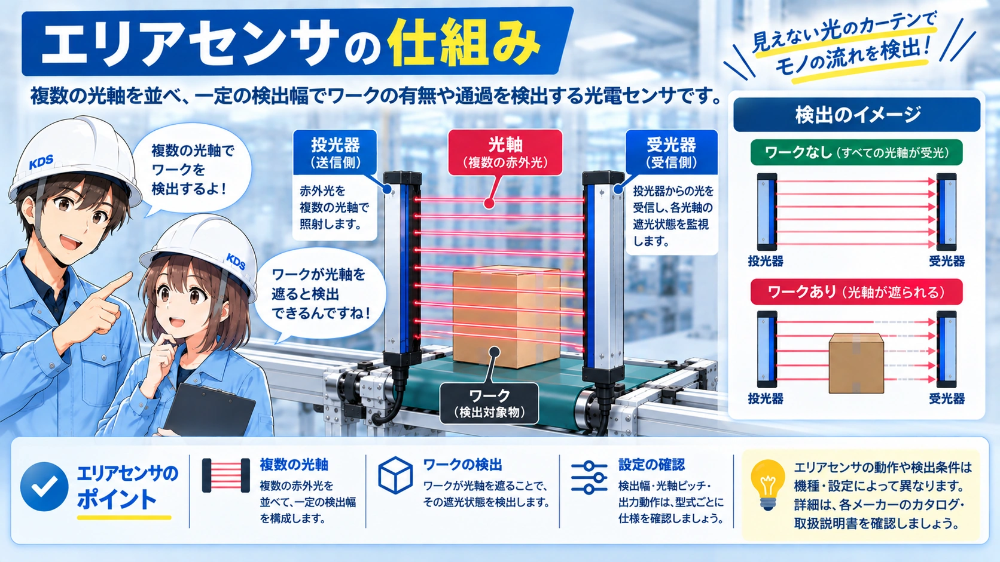
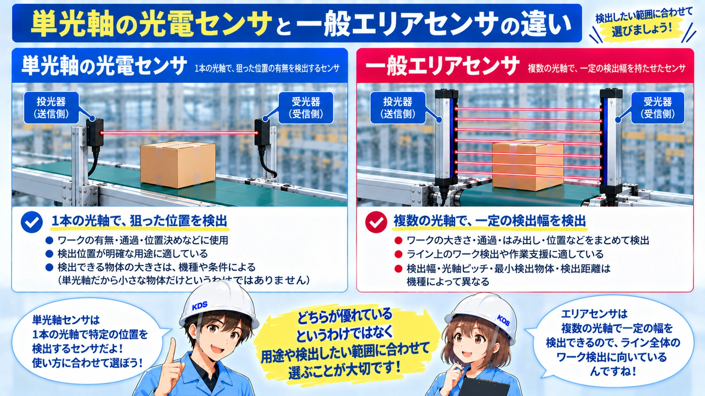
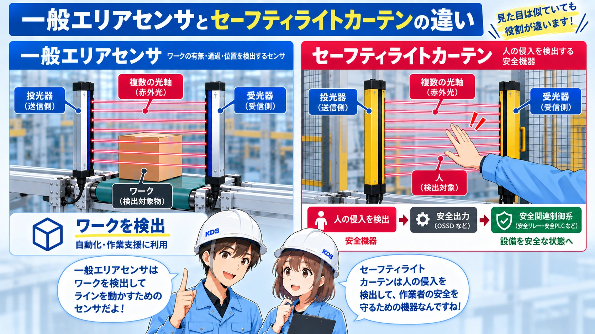
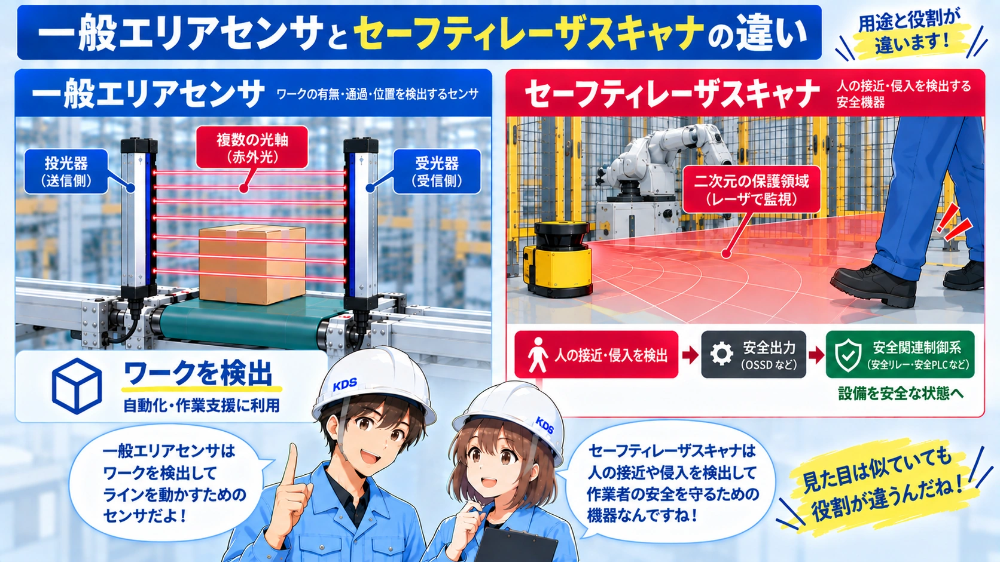
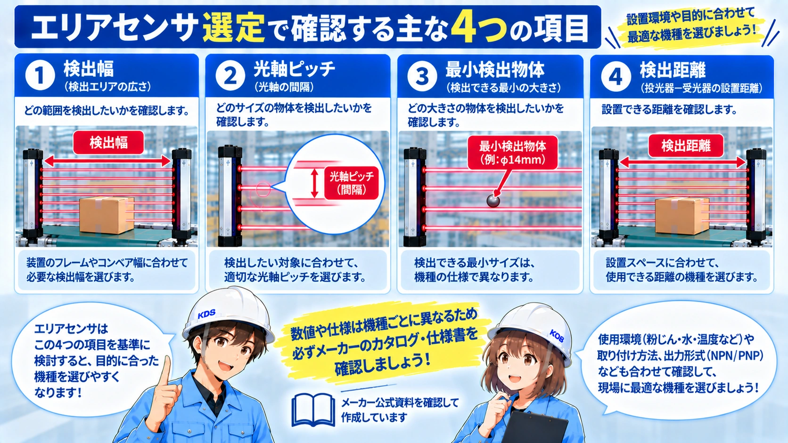

向いている人
- エリアセンサが何を検出する機器か知りたい人
- 光電センサやライトカーテンとの違いを整理したい人
- 設備で使われている多光軸センサの見方を知りたい人
エリアセンサは、複数の光軸を並べてワークや手などの遮光を検出する多光軸の光電センサです。単光軸の光電センサ、セーフティライトカーテン、セーフティレーザスキャナとの違いまで整理します。
この記事は、Panasonic IndustryとKEYENCEの公式資料を確認し、エリアセンサを多光軸の光電センサとして整理しています。安全用途では一般のエリアセンサとセーフティライトカーテン／セーフティレーザスキャナを混同しないことを重視しています。実際の検出距離・光軸ピッチ・最小検出物体・出力方式・安全要求は、対象型式の最新資料を優先してください。
最終内容更新：2026年9月23日 ／ 公式資料確認日：2026年9月23日
エリアセンサは、複数の光軸を並べて、一定の検出幅の中でワークや手などの遮光を検出する光電センサです。Panasonic Industryは、エリアセンサを「ピッキングセンサなど多光軸の光電センサ」として分類しています。
一般的な構成では、棒状の投光器と受光器を向かい合わせ、その間に複数本の光軸を作ります。ワークなどが1本以上の光を遮ると、センサの出力状態が変わります。機種によっては光軸ごとの状態を扱えるものもあります。
名前に「エリア」と付いていても、FAで一般にいうエリアセンサは、投光器と受光器の間に並んだ複数光軸で検出する機器です。AGV周辺のような二次元の保護領域を設定する機器は、セーフティレーザスキャナなど別のカテゴリです。
基本は透過型の光電センサと同じで、投光器から出た光を受光器で受けます。違いは、光軸が1本ではなく複数並んでいる点です。

投光器と受光器を向かい合わせ、一定のピッチで複数の光軸を並べます。
ワークや手などが検出幅を通過すると、1本以上の光軸が遮光されます。
遮光状態に応じて検出出力が変化します。入光時ON／遮光時ONなどの動作は型式で確認します。
出力をPLC入力や表示・判定回路へ取り込み、ワーク検出や作業指示に利用します。
検出幅は光軸が並んでいる全体の高さ・幅、光軸ピッチは隣り合う光軸の間隔です。最小検出物体は光軸ピッチや光学条件に関係するため、「検出幅が広いから小さい物も検出できる」とは限りません。
メーカー資料では、生産・組立ラインの効率化や誤作業防止、ピッキング用途などが代表例として挙げられています。1本の光軸では位置ずれで見逃しやすい対象を、複数光軸でまとめて検出したい場面に向いています。
部品棚などで手の通過を検出し、取り間違い防止や作業指示と組み合わせる用途があります。
高さや位置が多少変わるワークを、複数光軸のどこかで遮光させて検出します。
一定の検出幅を持たせ、ワークの有無や通過状態を確認する構成に使われます。
機種によっては表示灯などを備え、検出信号と作業指示を組み合わせやすい製品があります。
エリアセンサも光を使うため、原理の大枠では光電センサの仲間です。初心者向けには、1本の光軸で一点・一列を狙うか、複数光軸で幅を持たせて見るかで分けると理解しやすいです。

| 項目 | 一般的な透過型光電センサ | エリアセンサ |
|---|---|---|
| 光軸 | 基本は1本 | 複数本 |
| 見たい範囲 | 狙った位置 | 一定の検出幅 |
| 向く例 | 決まった位置のワーク有無 | 位置ずれを含む通過検出・ピッキング |
| 選定で見るもの | 検出距離、スポット、応答など | 検出距離に加え、光軸数・ピッチ・検出幅など |
ただしメーカーによって商品分類や名称は異なります。実際の選定では「エリアセンサ」という名前だけで決めず、検出原理と仕様を確認します。
外観は似ていますが、一般のエリアセンサとセーフティライトカーテンは同じものではありません。一般のエリアセンサはワーク検出や作業支援向けのセンサで、人体保護に必要な安全機能・自己診断・規格適合を持つとは限りません。

| 項目 | 一般のエリアセンサ | セーフティライトカーテン |
|---|---|---|
| 主な目的 | ワーク検出・ピッキング・作業支援 | 人の侵入を検出する安全用途 |
| 複数光軸 | 使う | 使う |
| 故障時の安全動作 | 安全機器として保証されない | 安全機器として自己診断・安全出力等を備える |
| 人体保護 | 一般品を代用しない | 用途・規格に合う機種を選定 |
Panasonic IndustryのNA2-N公式資料では、人体保護用の検出装置として使用する場合はライトカーテンを使うよう明記されています。見た目が似ているという理由で一般のエリアセンサを安全装置の代わりにしないでください。
セーフティレーザスキャナは、レーザ光の反射を使って二次元の保護領域や警告領域を監視する安全機器です。KEYENCEの公式資料では、AGVへの搭載、ロボット周辺の安全対策、存在検知・侵入検知などが用途として示されています。

旧記事で説明していた「AGV周辺の広い範囲を監視する」「自由な保護領域を設定する」という役割は、一般のエリアセンサよりセーフティレーザスキャナの説明に近い内容です。今回の更新では、この2つを明確に分けます。
型式選定では、必要な「幅」だけでなく、検出したい物体の大きさや設置距離、出力方式まで確認します。

どの高さ・幅をカバーしたいかを決め、必要な光軸数と検出幅を確認します。
検出したい物体が光軸の間をすり抜けないか、メーカー仕様で確認します。
投光器と受光器の設置間隔が、対象機種の検出距離範囲に入るか確認します。
NPN/PNP、出力動作、電源電圧、応答時間などをPLCや制御回路側と合わせます。
設備でエリアセンサを見つけたら、まず「何を検出しているか」と「何本の光軸でどこを見ているか」を追うと役割が理解しやすくなります。
向かい合う2本のセンサ間に、どの高さ・幅の光軸が作られているかを確認します。
手、部品、箱、ワークなど、何が光を遮った時に信号を変えたいのかを確認します。
PLC入力、表示灯、作業指示など、検出信号がどこへ入っているかを図面と照合します。
人の保護に関係する場合は、一般のエリアセンサではなく、安全機器の型式・安全出力・安全回路を確認します。

先輩エリアセンサは「広い場所を見る」より、「光電センサの光軸を何本も並べたもの」と考えると分かりやすいよ。

後輩見た目がライトカーテンに似ていても、安全用かどうかは別に確認するんですね。
エリアセンサは、投光器と受光器の間に複数の光軸を並べ、ワークや手などが光を遮ったことを検出する多光軸の光電センサです。ピッキング、ワークの通過・有無確認など、生産・組立工程の検出に使われます。
一般のエリアセンサは、人体保護用のセーフティライトカーテンとは別物です。また、AGV周辺など二次元の保護領域を監視するセーフティレーザスキャナとも役割が異なります。
「複数光軸の光電センサ」「検出幅・光軸ピッチ・最小検出物体を見る」「人体保護は安全機器を選ぶ」の3点を押さえると、エリアセンサの役割を取り違えにくくなります。